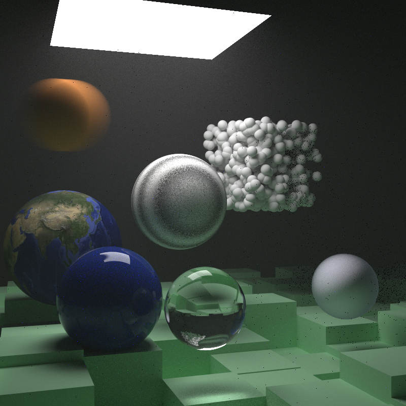
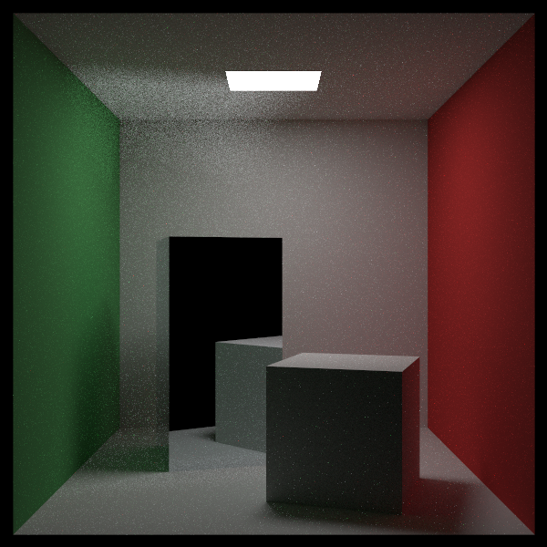
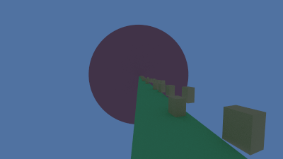
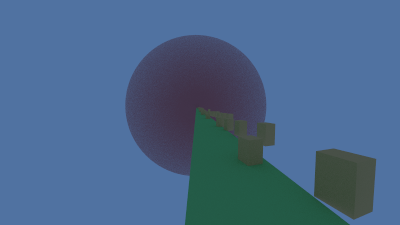

Overview
Raytracer developed by following the Ray Tracing in One Weekend series by Peter Shirley, with additional features implemented at every step. Additional features are detailed as followed:
Render Timer
A timer that tracks the progress of rendering accross multiple threads, and gives an accurate rendering time at the end.
PNG output
Images created are put into the png format rather than ppm utilizing the stb_image_write.h header.
Multithreading
Multiple threads parralelize the rendering process, making the render much faster. Currently it just utilizes the multiple cores of the CPU for rendering but future GPU acceleration should be possible.
OBJ mesh and Triangle Rendering
Triangle primitives and OBJ loading using tinyOBJ loader. Texture coordinates, materials, and geometry transformations are all supported. All quads and polygon meshes are automatically triangulized by tinyOBJ loader.
Atmospheric Perspective Camera effect
Atmospheric Perspective is the effect where as light travels into the distance, random particles in the air will scatter. This makes objects in the distance appear closer to the color of the sky, often shifted blue in color. This effect is achieved by checking a random number with a scene defined distance to scatter 50% of rays upon each ray cast, so the farther something is the larger the chance for a ray to scatter randomly and contribute a scattered color to the final pixel color attenuation.
Texture Mapping
Texture coordinates are incorporated for every primitive, including spheres, quads, and triangles.
Monte Carlo Raytracing
Monte Carlo algorythms are algorythms that utilize accumulation of random chance to reach a value close to true calculation. Monte Carlo raytracing utilizes probabliity distribution functions to adjust the random scattering of rays to tend towards important sources of detail in the scene, like light sources, reflective surfaces, and dielectric sources particularly those that generate caustic light effects.




Future Work
Additional work to be implemented is a sequence renderer for animations & animation translation, a tilt shifted lens simuilated camera effect, smooth incorporation into a virtual development workflow, and more!